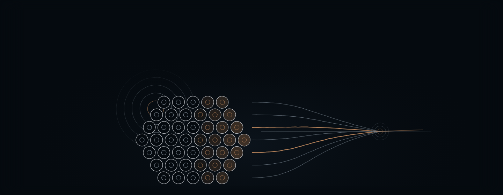
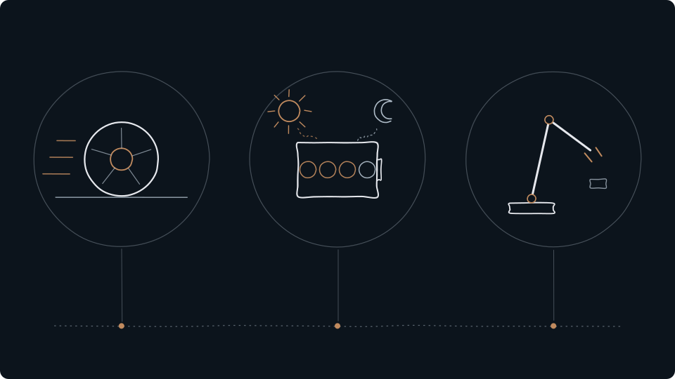

Elektriske køretøjer
En bil giver en indtægt ved levering eller leasing.
Tesla forbinder elektriske køretøjer, batterilagring og software. Det interessante er, at de tre områder løser forskellige problemer: at flytte mennesker, at flytte strøm i tid og at lade maskiner udføre opgaver.

En bil giver en indtægt ved levering eller leasing.
Et batterianlæg indgår i energisystemet i mange år.
Software og nye autonome tjenester følger en tredje logik.

En bil giver en indtægt ved levering eller leasing. Et batterianlæg indgår i energisystemet i mange år. Software og nye autonome tjenester følger en tredje logik. Derfor fortæller udviklingen i bilproduktionen ikke alene, hvordan alle delene af Tesla udvikler sig.
Forklaringen bygger på selskabskilderne nederst. Spørgsmålene er redaktionelle læsegreb.
3. kvartal · Tesla 10-Q, indleveret 22.10.2026.
Q3 2026 28.046
Q3 2025 28.095
Historiske nedslag med de oprindelige kilder. Perioderne fremgår ved hvert tal; de er ikke nødvendigvis selskabets seneste rapport.
“Still, some of the biggest questions remain unanswered.”
Analysen kobler Cybercab til produktion, vedligeholdelse og daglig anvendelse. Den understreger samtidig, at pris og udbredelse endnu var uafklarede på udgivelsesdatoen.
Tesla’s Cybercab Is Here. The Potential Is Clearer Than the Details ↗NewDeal Invest · Jesper Bæk · 04.09.2026. Dateret kommentar.
Brug spørgsmålene til at følge udviklingen. De er ikke en vurdering af aktiens attraktivitet.
Vægten ved de tilgængelige månedsobservationer. En ændret vægt kan skyldes både kursbevægelser og ændringer i beholdningen.
Andel af PMINDI · månedlige observationer
1,49 % · 01.10.2026
01.11.202401.10.2026
Første tilgængelige Fundmarket-rapport i hver måned. Manglende observationer er udeladt, ikke sat til nul. Grafen viser fondsvægt, ikke aktiekurs.
| Dato | Andel af PMINDI |
|---|---|
| 01.11.2024 | 1,45 % |
| 02.12.2024 | 1,13 % |
| 02.01.2025 | 1,00 % |
| 03.02.2025 | 0,82 % |
| 03.03.2025 | 1,16 % |
| 01.04.2025 | 1,36 % |
| 02.05.2025 | 0,94 % |
| 02.06.2025 | 0,81 % |
| 01.07.2025 | 0,75 % |
| 01.08.2025 | 0,86 % |
| 01.09.2025 | 0,84 % |
| 01.10.2025 | 0,99 % |
| 03.11.2025 | 0,99 % |
| 01.12.2025 | 0,80 % |
| 02.01.2026 | 0,70 % |
| 02.02.2026 | 1,08 % |
| 02.03.2026 | 1,06 % |
| 01.04.2026 | 1,16 % |
| 01.05.2026 | 1,55 % |
| 01.06.2026 | 0,77 % |
| 01.07.2026 | 0,26 % |
| 03.08.2026 | 0,52 % |
| 01.09.2026 | 1,89 % |
| 01.10.2026 | 1,49 % |
Siden redigeret 26.10.2026. Regnskabskilderne er daterede dokumenter og udgør ikke en påstand om at være selskabets seneste rapport.